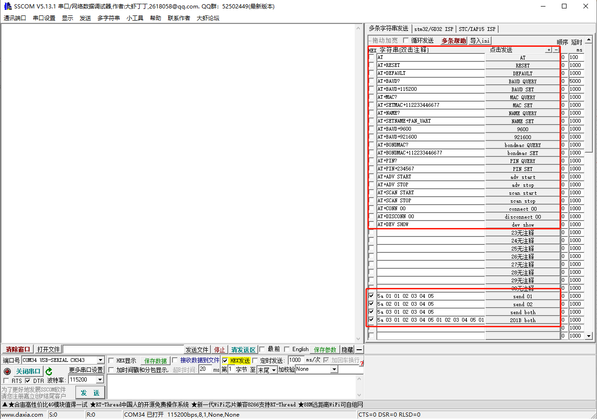

BLE HID Uart Mult Roles¶
1 功能概述¶
此sample为pan107上演示蓝牙HID串口设备的透传功能，支持1主1从
2 环境要求¶
board:
pan107（芯片型号）开发板 * 2uart0: 设置P16，P17作为默认的LOG输出端口
uart1: 默认P24作为Uart1 Rx端-连接串口工具TX端，P10作为Uart1 Tx端-连接串口工具RX端，波特率115200
蓝牙主机设备如手机
4 演示说明¶
4.1 AT指令说明¶
所有AT指令必须以
\r\n字符结尾。广播状态为AT指令模式。连接状态为数据透传。AT指令模式以字符串格式发送。数据透传串口以hex格式发送。存储参数：
typedef struct { uint32_t baudrate; uint8_t own_mac[6]; uint8_t device_name[28]; uint8_t name_length; uint8_t bond_mac[6]; uint32_t passkey; uint32_t rst_flag; } fmc_data;
全擦除后上电第一次打印默认初始化参数，用户可以后续通过AT命令进行修改
default_data_init Baudrate : 115200 Own_mac : 22 22 22 22 22 22 Bond_mac : 11 22 33 44 66 88 Name_length : 7 Device_name : pan_spp Passkey : 123456
AT指令表
AT指令序号 |
AT指令 |
回复 |
说明 |
|---|---|---|---|
1 |
AT |
AT+OK |
测试串口通讯是否正常 |
2 |
AT+RESET |
OK+RESET |
复位芯片指令 |
3 |
AT+DEFAULT |
OK+DEFAULT |
恢复出厂设置 |
4 |
AT+BAUD? |
BAUD+波特率 |
10进制值（1200-115200） |
5 |
AT+BAUD+115200 |
OK+BAUD |
设置波特率 1200-115200任意值 |
6 |
AT+MAC? |
MAC+地址 |
查询MAC地址 |
7 |
AT+SETMAC+地址 |
OK+SETMAC |
设置MAC地址成功 |
8 |
AT+NAME? |
NAME+广播名字 |
查询蓝牙广播名字 |
9 |
AT+SETNAME+名字 |
OK+SETNAME |
设置广播名字成功，最长28字节，超过将会截断 |
10 |
AT+BONDMAC? |
BONDMAC+地址 |
查询扫描过滤条件的绑定地址 |
11 |
AT+BONDMAC+地址 |
OK+BONDMAC |
设置扫描过滤条件的绑定地址成功 |
12 |
AT+PIN? |
PIN+设置配对密码 |
作为从机配对时需要在手机端输入密码 |
13 |
AT+PIN+配对密码 |
OK+PIN |
设置密码成功 |
14 |
AT+ADV START |
OK+ADV START |
默认开启了广播 |
15 |
AT+ADV STOP |
OK+ADV STOP |
在广播开启条件下可以停止广播 |
16 |
AT+SCAN START |
OK+SCAN START |
依次输出2条 |
17 |
AT+SCAN STOP |
OK+SCAN STOP |
在扫描开启条件下可以停止扫描 |
18 |
AT+CONN 00 |
OK+CONN |
依次输出5条 |
19 |
AT+DISCONN 00 |
OK+DISCONN |
依次输出2条 |
20 |
AT+DEV SHOW |
OK+DEV SHOW |
显示连接列表 |
21 |
其他 |
AT+ERROR |
未定义 |
注： 当前NDK烧录代码后，默认开启广播，未开启扫描，命令14-20中仅16可用，并且扫描到指定UUID进行自动连接
连接状态下，发送透传消息以hex格式发送，消息格式如下
Pattern(1B)
Send Connect Index(1B)
data(0~200B)
0x5A
发送给index的参数为置位index bit位
bit0为发送给从机，bit1为发送给主机
4.2 演示流程¶
4.2.1AT配置测试¶
命令1-13可以灵活配置和读取默认配置参数，先进行测试后，建议发送AT+DEFAULT恢复默认配置
注意：
目前指令5设置921600会返回信息OVER 115200 REJECT，设置相等值会返回NO CHANGE BAUD，设置115200以下的串口波特率会返回OK+BAUD RESET并reset芯片，切换波特率可以继续通信测试
部分设置命令会答应
RESETING...进行芯片重启

AT指令测试窗口¶
4.2.2 蓝牙状态测试¶
主机和从机可以同时支持，默认上电开启了广播，最多支持1主1从
准备2块板子A和B，分别烧录程序后，A板子只作为从机，可以通过AT指令修改设备mac地址和名字，防止手机扫描到两个设备信息完全一样
然后对B板子以以下流程进行测试
4.2.2.2 主机模式¶
作为主机，需要主动开始扫描，扫描到设备后，主动进行连接已经开启的另一块从机设备，连接从机时默认会进行服务发现、notify enable，之后可以进行消息透传测试
AT+SCAN START，成功连接后返回SCAN DONE芯片主机端进行数据传输测试
可以进行第二块从机的准备和完成扫描连接流程
可以对主机从机同时进行传输